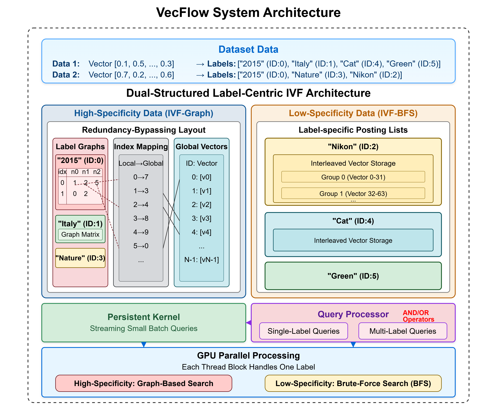
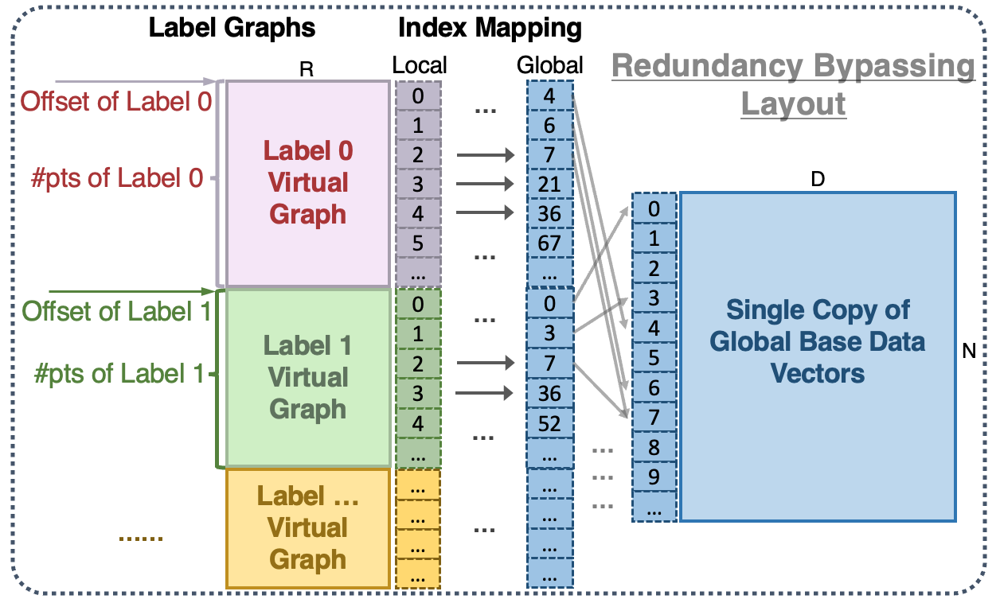
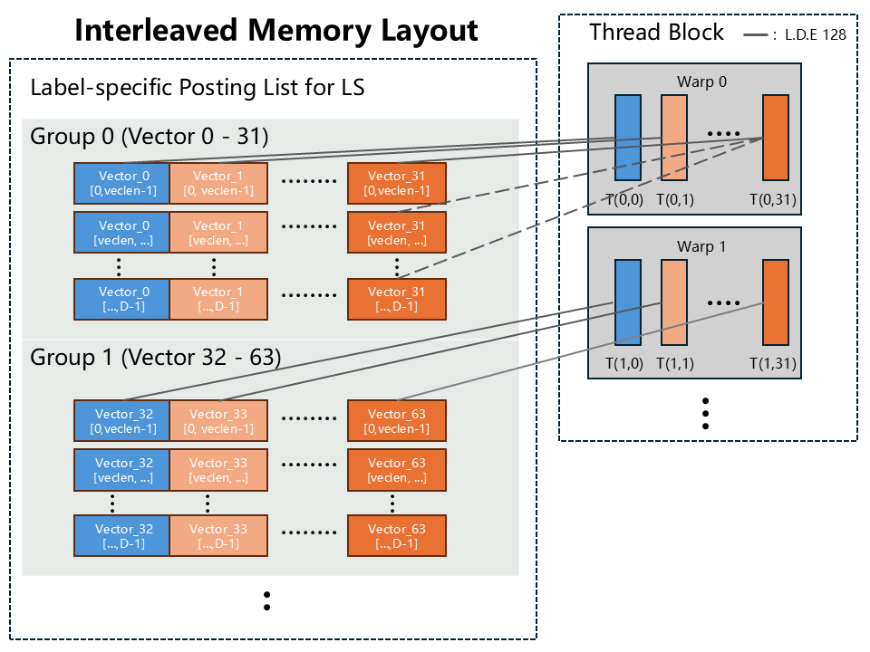
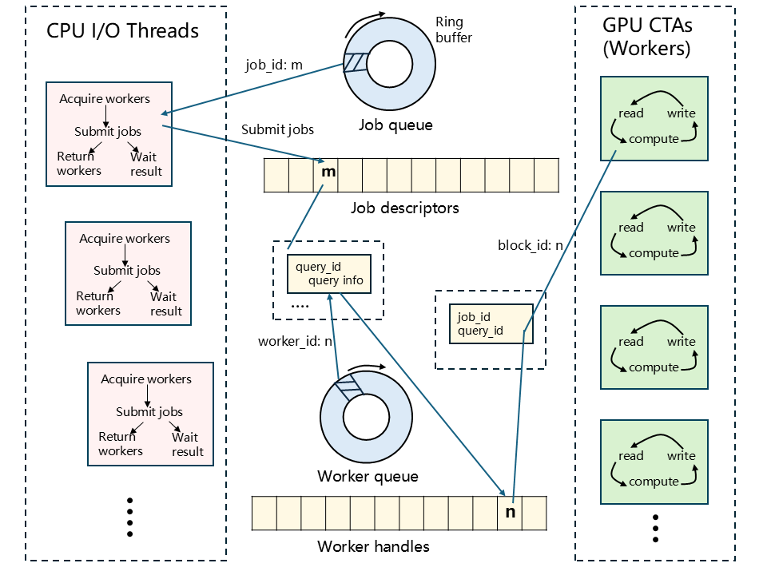

News
- 🎉 2025-6-2 The Arxiv version is available at arXiv.
- 🎉 2025-5-31 VecFlow is open-sourced at GitHub.
- 🎉 2025-5-23 VecFlow is accepted by SIGMOD 2026.
Vector search and database systems have become a keystone component in many AI applications. While many prior research has investigated how to accelerate the performance of generic vector search, emerging AI applications require running more sophisticated vector queries efficiently, such as vector search with attribute filters. Unfortunately, recent filtered-ANNS solutions are primarily designed for CPUs, with few exploration and limited performance of filtered-ANNS that take advantage of the massive parallelism offered by GPUs. In this paper, we present VecFlow, a novel high-performance vector data management system that achieves unprecedented high throughput and recall while obtaining low latency for filtered-ANNS on GPUs. We propose a novel label-centric indexing and search algorithm that significantly improves the selectivity of ANNS with filters. In addition to algorithmic level optimization, we provide architecture-aware optimizations for VecFlow's functional modules, effectively supporting both small batch and large batch queries, and single-label and multi-label query processing. Experimental results on NVIDIA A100 GPU over several public available datasets validate that VecFlow achieves 5 million QPS for recall 90%, outperforming state-of-the-art CPU-based solutions such as Filtered-DiskANN by up to 135 times. Alternatively, VecFlow can easily extend its support to high recall 99% regime, whereas strong GPU-based baselines plateau at around 80% recall.




We evaluate VecFlow on several public datasets, including semi-synthetic SIFT-1M and DEEP-50M with Zipf-distributed labels, real-world YFCC-10M, and WIKI-ANN for multi-label AND queries. VecFlow achieves million-scale QPS at 90% recall, which is one to two orders of magnitude higher than both CPU and GPU baselines. For multi-label search, VecFlow delivers 150K QPS at 90% recall where competing methods fail to achieve meaningful recall. For small batch queries, VecFlow's persistent kernel achieves up to 7.08× higher throughput and 1.82× lower latency. Our IVF-BFS approach delivers 26M QPS for low-specificity labels in YFCC dataset, which is thousands of times faster than baseline methods. With carefully designed redundancy-bypassing optimization, VecFlow maintains a memory footprint comparable to single-index methods while substantially outperforming them.
@article{vecflow2025,
author = {Xi, Jingyi and Mo, Chenghao and Karsin, Ben and Chirkin, Artem and Li, Mingqin and Zhang, Minjia},
title = {VecFlow: A High-Performance Vector Data Management System for Filtered-Search on GPUs},
journal = {arXiv preprint arXiv:2506.00812},
year = {2025},
}